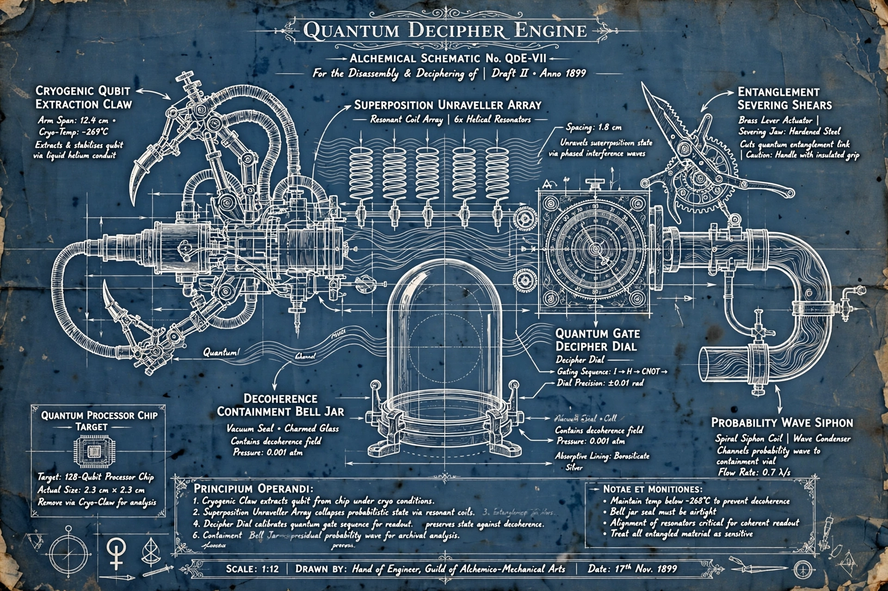

Alchemical Schematic No. QDE-VII — for the disassembly & deciphering of the quantum processor chip.
Draft II • Anno 1899 • Scale 1:12 • Drawn by: Hand of Engineer, Guild of Alchemico-Mechanical Arts • Date: 17th Nov. 1899
Drag to pan • scroll to zoom • tap a gold marker

Principium Operandi — the operating principle, as written on the draft
Cryogenic Claw extracts qubit from chip under cryo conditions.
Superposition Unraveller Array collapses probabilistic state via resonant coils.
Entanglement Shears [partially legible on the draft] preserves state against decoherence.
Decipher Dial calibrates quantum gate sequence for readout.
Illegible on the draft.
Containment Bell Jar [partially legible on the draft] residual probability wave for archival analysis.
Notae et Monitiones
Maintain temp below -268°C to prevent decoherence
Bell jar seal must be airtight
Alignment of resonators critical for coherent readout